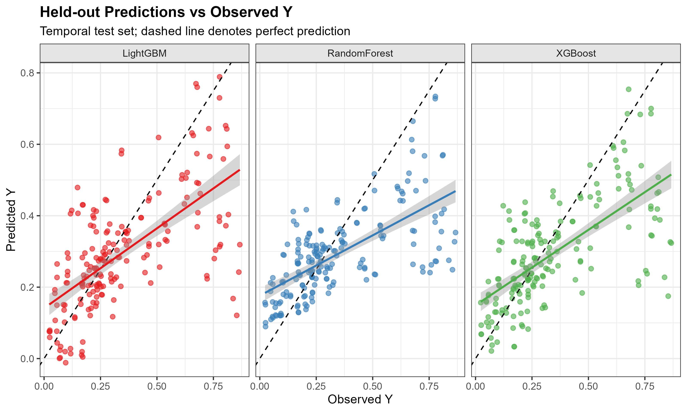
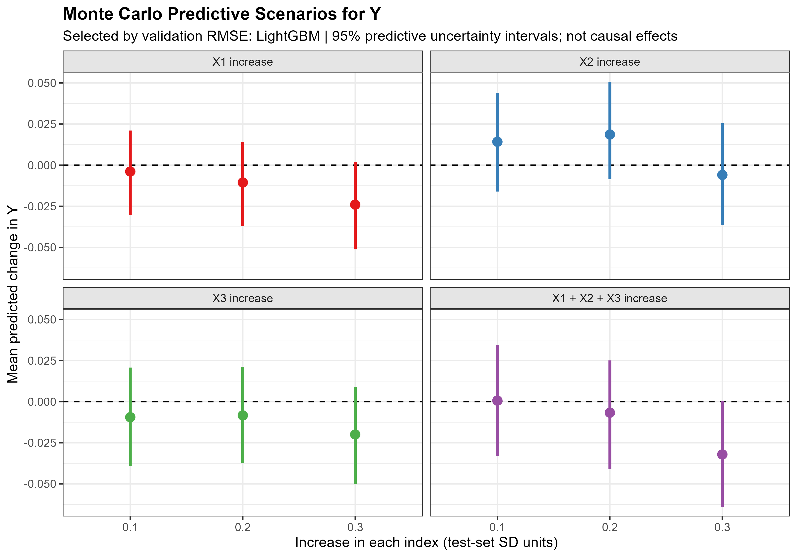
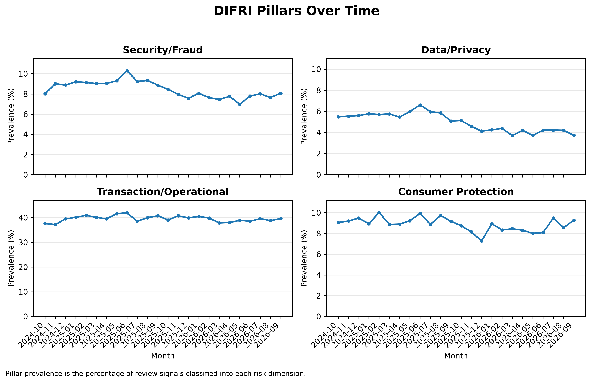

Project Visual Outputs
Hasil Analisis & Visualisasi Data Utama
Geser horizontal untuk melihat artefak grafik riset
 ISCAAS UNPAD 2026
ISCAAS UNPAD 2026
Green Industries Leapfrogging Assessment
Analisis estimasi perubahan terhadap *baseline* dalam mengukur lompatan industri hijau serta transformasi keberlanjutan sektor manufaktur.

Model DiagnosticsMachine Learning Model Prediction Diagnostics
Perbandingan performa prediksi dan diagnostik kesalahan antar-algoritma Machine Learning pada dataset makroekonomi berdimensi tinggi.

Stochastic SimulationMonte Carlo Scenario Estimates
Simulasi stokastik berbasis skenario Monte Carlo untuk mengukur rentang sensitivitas dan estimasi ketidakpastian proyeksi krisis.

IDSC 2026Digital Financial Risk Index (DIFRI) Pillars
Konstruksi arsitektur pilar risiko keuangan digital (DIFRI) untuk memetakan stabilitas ekosistem Fintech dan perbankan.